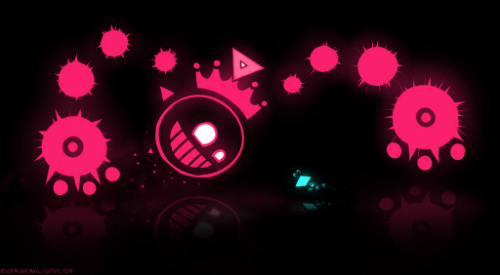

My idea of an ideal spring break is probably not as exciting as others might be, but I tend to enjoy these steps every. Step Uno. First of all I am going to shift my sleeping schedule so that I am able to stay up through most of the night and sleep during the day to make the most of every night during the break. Sunlight is not needed unless it is mandatory for the activity or project I will be working on. Step Twei. After fixing my sleep schedule I will start working on tryharding some game such as Apex Legends or more competitive games like Dead By Daylight, Paladins and Just Shapes and Beats. On top of that I will spend several hours a day watching anime and maybe read a good book for a little while.
Step Three. Once I have caught up on my sleep and gotten or the initial burst of being able to play games and watch anime for 18 hours a day I'll hopefully meet up with some friends if they aren't busy doing something or are out of town. Knowing how things usually go it'll take us a couple years to decide where we actually want to go while standing around awkwardly in a parking lot. Once we finally are able to choose a location, we'll find something to eat or drink and play board games or card games for hours and hours on end. Step 四 I'm going to start testing out ideas that I've been writing down for game development ideas through the Unreal Engine or Unity. With that hopefully I can spare some time developing a story for Cogent which is another dice rolling, RPG, similar to Dungeon and Dragons except for one key thing, this game is brutal and the DM is not afraid to end your character if you roll bad enough. Which in my opinion adds more risk and makes it a little more fun watching the consequence of their actions, or they pull of an extremely high roll and get away with something that didn't need to happen in the slightest.